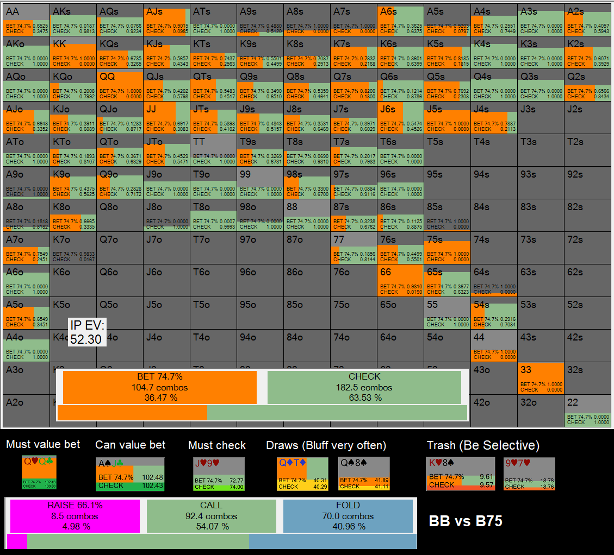
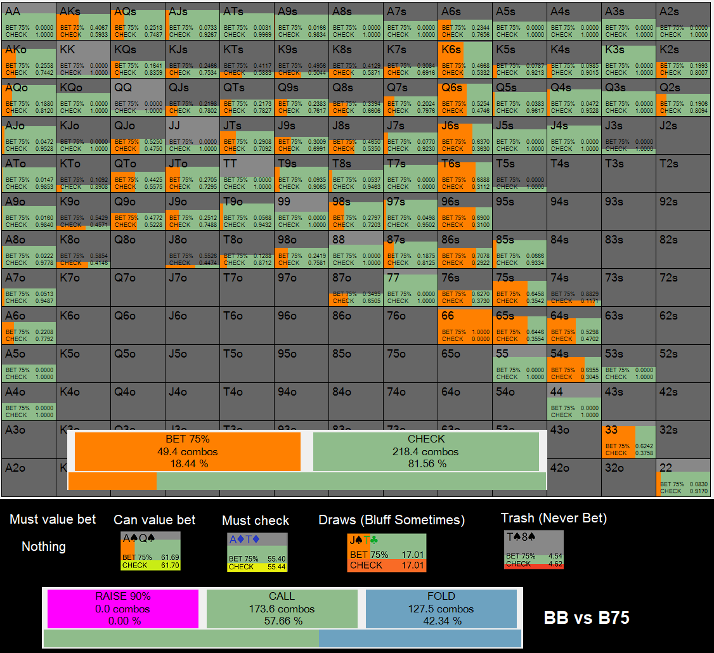
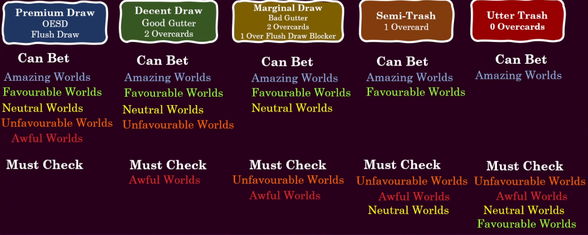

Turn Barrel Opportunities
Favourability of Turn Worlds
A turn world and its favourability are not just a function of the turn card alone but of:
- Pre-Flop Ranges
- The Flop
- Flop Action
- The Turn Card
Examples of different turn worlds
Examples of different turn worlds:
Attacking Favourable Worlds
In favourable turn worlds we are able to bluff much less selectively and should have a betting frequency of 60% upwards on average. Of course we still need to build a polarised betting range and check our most middling hands.
In the following highly favourable turn spot out turn strategy is extremely aggressive. We value bet a LOT of hands and can seek fold equity very often with our air hands as well as our semi-bluffs

Showing Restraint in Neutral Worlds
When the turn is a card that connects with BB's flop calling range the IP player will find himself/herself in a much more neutral world. BU will have a range disadvantage here but will be surviving in EV due to the large N.A and the benefits of position. Note how BU's value betting threshold is now much higher and his bluffs are chosen carefully.
Being Picky in Unfavourable Worlds
When we are out of position and a card comes that connects with Villain's flop calling range, we will be in an unfavourable world and will want to: check at a high frequency and protect our checking range; value bet only very strong hands; and be very strict about our requirements for bluffing
The Ace Turn Fallacy
It is easy to imagine that Ace turn card will be beneficial to the flop c-bettor, but this is not always the case.
In fact in very wide range encounters, the pre-flop caller will often call a small c-bet with a lot of Ax combos.
Generally speaking then, a T, J, Q or K turn tends to be much more favourable for a c-bettor then an Ace since the pre-flop caller will have folded many of these cards to the flop c-bet but not ace high (sizing and board dependant.)
Although this is a very high EV spot for SB's range in general, it is not so good on the Ace because BB catches up with our overpair region heavily on this card.
On the Ace, we lose a great deal of our range and nut advantage.
Protecting the Turn Checking Range
Having a protected range is an important part of playing a theoretically sound turn strategy.
The Positional Slow-Playing Rule
In position on the turn your checking range as a flop c-bettor should be capped but bolstered by some high equity but not nutted hands (In Grade 1 we call these Tier 2 Hands)
Out of position on the turn your checking range as a flop c-bettor should be uncapped and you will even check some nutted hands at a reasonable frequency
Example 1
JJ checks at 79% frequency and 22 checks at 66% frequency.
Example 2
Qc7c checks at 40% frequency and Kc6c always bets.
Deciding Whether to Barrel Unmade Hands
Let's break our unmade hands (bluff candidates) down into five categories.
